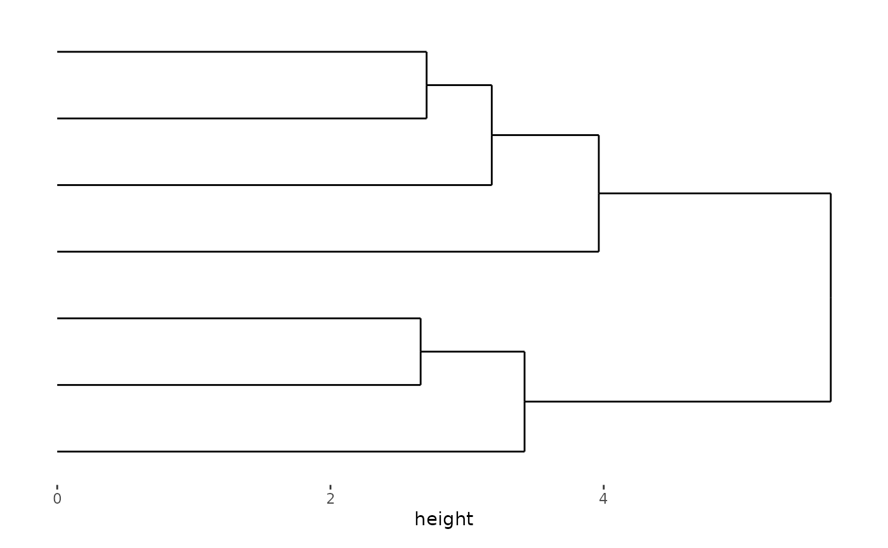
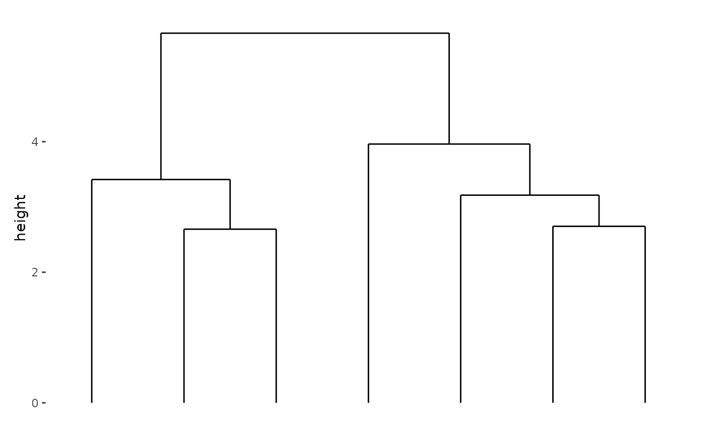
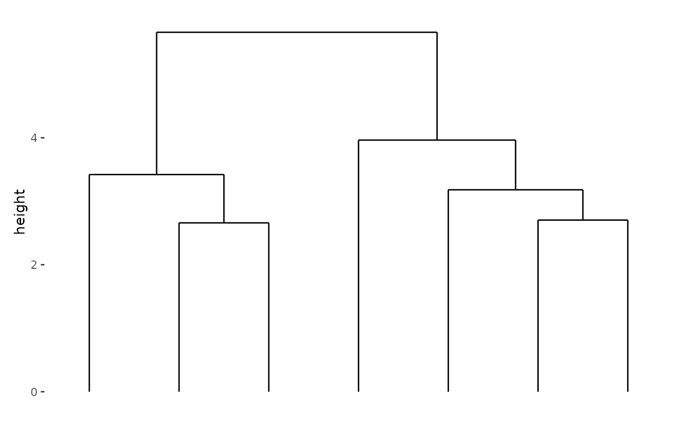

![[Stable]](figures/lifecycle-stable.svg)
If limits is provided, a continuous variable will be required and aligned
in the direction specified (stack_continuous). Otherwise, a discrete
variable will be required and aligned (stack_discrete).
Several aliases are provided for convenience:
stack_vertical: A special case ofstack_layoutthat setsdirection = "v".stack_horizontal: A special case ofstack_layoutthat setsdirection = "h".stack_discretev: A special case ofstack_discretethat setsdirection = "v".stack_discreteh: A special case ofstack_discretethat setsdirection = "h".stack_continuousv(): A special case ofstack_freethat setsdirection = "v".stack_continuoush(): A special case ofstack_freethat setsdirection = "h".
For historical reasons, the following aliases are available:
stack_alignis an alias forstack_discrete.stack_alignvis an alias forstack_discretev.stack_alignhis an alias forstack_discreteh.stack_freeis an alias forstack_continuous.stack_freevis an alias forstack_continuousv.stack_freehis an alias forstack_continuoush.
Usage
stack_layout(
direction,
data = NULL,
...,
theme = NULL,
sizes = NA,
limits = waiver()
)
stack_horizontal(data = NULL, ..., limits = waiver())
stack_vertical(data = NULL, ..., limits = waiver())
stack_discrete(direction, data = NULL, ..., theme = NULL, sizes = NA)
stack_discretev(data = NULL, ...)
stack_discreteh(data = NULL, ...)
stack_continuous(
direction,
data = NULL,
...,
limits = NULL,
theme = NULL,
sizes = NA
)
stack_continuousv(data = NULL, ...)
stack_continuoush(data = NULL, ...)Arguments
- direction
A string indicating the direction of the stack layout, either
"h"(horizontal) or"v"(vertical).- data
Default dataset to use for the layout. If not specified, it must be supplied in each plot added to the layout:
If
limitsis not provided,fortify_matrix()will be used to get a matrix.If
limitsis specified,fortify_data_frame()will be used to get a data frame.
- ...
Additional arguments passed to
fortify_data_frame()orfortify_matrix().- theme
A
theme()object used to customize various elements of the layout, includingguides,title,subtitle,caption,margins,panel.border, andbackground. By default, the theme will inherit from the parentlayout. It also controls the panel spacing for all plots in the layout.- sizes
A numeric value or a
unitobject. When used for thequad_layout()annotation, it must be of length1. When used in thestack_layout()with a nestedquad_layout(), it should be of length3, specifying the relative heights (fordirection = "h") or widths (fordirection = "v") to be applied to the layout.- limits
A
continuous_limits()object specifying the left/lower limit and the right/upper limit of the scale. Used to align the continuous axis.
Examples
set.seed(123)
small_mat <- matrix(rnorm(56), nrow = 7L)
stack_horizontal(small_mat) + align_dendro()

# this is the same with:
stack_discrete("h", small_mat) + align_dendro()
 stack_discreteh(small_mat) + align_dendro()
stack_discreteh(small_mat) + align_dendro()
 # For vertical layout:
stack_vertical(small_mat) + align_dendro()

# For vertical layout:
stack_vertical(small_mat) + align_dendro()
